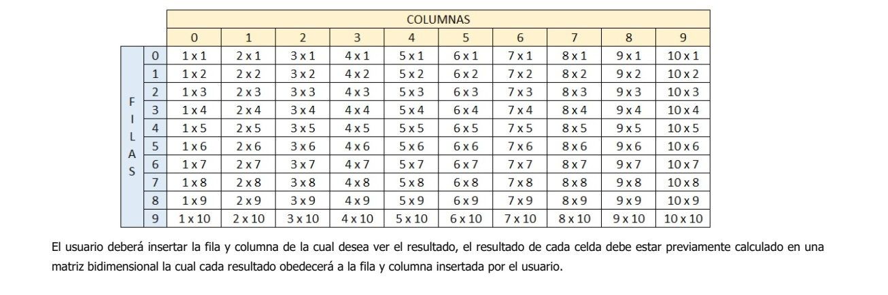

ARREGLOS Ejercicio # 5 5. 5. Se debe de imprimir el siguiente cuadro  Código Pseint Proceso CuadroMultiplicar Definir num Como Entero; Definir i, n, p ,j Como Entero; Definir res1, res2, res3, res4, res5, res6, res7, res8, res9, res10 Como Entero; Definir fila, columna, resultado Como Entero; Definir matriz Como Entero; Dimension matriz[11,12]; Escribir " ";Escribir " "; //Ingresamos el número de la tabla Escribir " Programa de resultado de tabla de multiplicar del 1 al 10"; Escribir " "; //codigo de la tabla del 1 al 9 n <- 9; Escribir "------------------------------------------------------------------------------------------------------------------"; Escribir " C O L U M N A "; Escribir "------------------------------------------------------------------------------------------------------------------"; Escribir" | | 0 | 1 | 2 | 3 | 4 | 5 | 6 | 7 | 8 | 9 |"; Escribir "------------------------------------------------------------------------------------------------------------------"; Escribir " | 0 | 1 X 1 | 2 X 1 | 3 X 1 | 4 X 1 | 5 X 1 | 6 X 1 | 7 X 1 | 8 X 1 | 9 X 1 | 10 X 1 |"; Escribir "------------------------------------------------------------------------------------------------------------------"; Escribir " | 1 | 1 X 2 | 2 X 2 | 3 X 2 | 4 X 2 | 5 X 2 | 6 X 2 | 7 X 2 | 8 X 2 | 9 X 2 | 10 X 2 |"; Escribir "------------------------------------------------------------------------------------------------------------------"; Escribir "F | 2 | 1 X 3 | 2 X 3 | 3 X 3 | 4 X 3 | 5 X 3 | 6 X 3 | 7 X 3 | 8 X 3 | 9 X 3 | 10 X 3 |"; Escribir "------------------------------------------------------------------------------------------------------------------"; Escribir "I | 3 | 1 X 4 | 2 X 4 | 3 X 4 | 4 X 4 | 5 X 4 | 6 X 4 | 7 X 4 | 8 X 4 | 9 X 4 | 10 X 4 |"; Escribir "------------------------------------------------------------------------------------------------------------------"; Escribir "L | 4 | 1 X 5 | 2 X 5 | 3 X 5 | 4 X 5 | 5 X 5 | 6 X 5 | 7 X 5 | 8 X 5 | 9 X 5 | 10 X 5 |"; Escribir "------------------------------------------------------------------------------------------------------------------"; Escribir "A | 5 | 1 X 6 | 2 X 6 | 3 X 6 | 4 X 6 | 5 X 6 | 6 X 6 | 7 X 6 | 8 X 6 | 9 X 6 | 10 X 6 |"; Escribir "------------------------------------------------------------------------------------------------------------------"; Escribir "S | 6 | 1 X 7 | 2 X 7 | 3 X 7 | 4 X 7 | 5 X 7 | 6 X 7 | 7 X 7 | 8 X 7 | 9 X 7 | 10 X 7 |"; Escribir "------------------------------------------------------------------------------------------------------------------"; Escribir " | 7 | 1 X 8 | 2 X 8 | 3 X 8 | 4 X 8 | 5 X 8 | 6 X 8 | 7 X 8 | 8 X 8 | 9 X 8 | 10 X 8 |"; Escribir "------------------------------------------------------------------------------------------------------------------"; Escribir " | 8 | 1 X 9 | 2 X 9 | 3 X 9 | 4 X 9 | 5 X 9 | 6 X 9 | 7 X 9 | 8 X 9 | 9 X 9 | 10 X 9 |"; Escribir "------------------------------------------------------------------------------------------------------------------"; Escribir " | 9 | 1 X 10 | 2 X 10 | 3 X 10 | 4 X 10 | 5 X 10 | 6 X 10 | 7 X 10 | 8 X 10 | 9 X 10 | 10 X 10 |"; Escribir "------------------------------------------------------------------------------------------------------------------"; Escribir " "; //fin de codigo para alinear tabla del 10 //codigo de ingreso a matriz5 //resultados de la multiplicación i <- 0; p <- -1; Para i <- 1 Hasta 10 Con Paso 1 Hacer Para j <- 0 Hasta 0 Con Paso 1 Hacer p <- p + 1; res1 <- 1 * i; matriz[p,0] <- res1; FinPara FinPara p <- -1; Para i <- 1 Hasta 10 Con Paso 1 Hacer Para j <- 0 Hasta 0 Con Paso 1 Hacer p <- p + 1; res2 <- 2 * i; matriz[p,1] <- res2; FinPara FinPara p <- -1; Para i <- 1 Hasta 10 Con Paso 1 Hacer Para j <- 0 Hasta 0 Con Paso 1 Hacer p <- p + 1; res3 <- 3 * i; matriz[p,2] <- res3; FinPara FinPara p <- -1; Para i <- 1 Hasta 10 Con Paso 1 Hacer Para j <- 0 Hasta 0 Con Paso 1 Hacer p <- p + 1; res4 <- 4 * i; matriz[p,3] <- res4; FinPara FinPara p <- -1; Para i <- 1 Hasta 10 Con Paso 1 Hacer Para j <- 0 Hasta 0 Con Paso 1 Hacer p <- p + 1; res5 <- 5 * i; matriz[p,4] <- res5; FinPara FinPara p <- -1; Para i <- 1 Hasta 10 Con Paso 1 Hacer Para j <- 0 Hasta 0 Con Paso 1 Hacer p <- p + 1; res6 <- 6 * i; matriz[p,5] <- res6; FinPara FinPara p <- -1; Para i <- 1 Hasta 10 Con Paso 1 Hacer Para j <- 0 Hasta 0 Con Paso 1 Hacer p <- p + 1; res7 <- 7 * i; matriz[p,6] <- res7; FinPara FinPara p <- -1; Para i <- 1 Hasta 10 Con Paso 1 Hacer Para j <- 0 Hasta 0 Con Paso 1 Hacer p <- p + 1; res8 <- 8 * i; matriz[p,7] <- res8; FinPara FinPara p <- -1; Para i <- 1 Hasta 10 Con Paso 1 Hacer Para j <- 0 Hasta 0 Con Paso 1 Hacer p <- p + 1; res9 <- 9 * i; matriz[p,8] <- res9; FinPara FinPara p <- -1; Para i <- 1 Hasta 10 Con Paso 1 Hacer Para j <- 0 Hasta 0 Con Paso 1 Hacer p <- p + 1; res10<- 10 * i; matriz[p,9] <- res10; FinPara FinPara //fin de resultados de la multiplicacion //mostrar Resultados Escribir "Ingrese la coordenada de resultado según el cuadro"; Escribir "Ingrese la Fila"; Leer fila; Escribir "Ingrese la Culumna"; Leer columna; resultado <- matriz[fila,columna] ; Escribir "Resultado de la multiplicación De: Fila # ", fila, " y la columna # ", columna ," la Multiplicación es: ", resultado; //fin de resultados FinProceso Volver a Principal